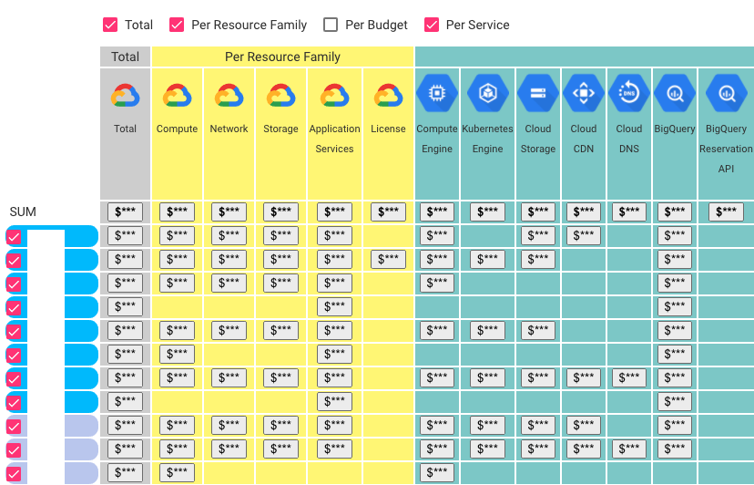

Architectural Analytics

IN THIS SECTION, YOU WILL: Understand how to use diverse data sources to support architecture decision-making processes and get concrete tips on creating architecture-centric data tools.
KEY POINTS:
- The Architectural Analytics serves as a medium to create a complete, up-to-date picture of critical elements of the organization’s technology landscapes.
- Architectural Analytics provides an architecture-centric view of data about a technology landscape based on source code analyses, public cloud billing reports, vibrancy reports, or incident tickets.
- To facilitate the creation of Architectural Analytics, I have been creating open-source tools that can help you obtain valuable architectural insights from data sources, such as source code repositories. Check out open-source architecture dashboard examples and Sokrates.
“If we have data, let’s look at data. If all we have are opinions, let’s go with mine.” -— Jim Barksdale
Everywhere I worked on creating an architecture practice, I strongly (aka obsessively) emphasized data. Consequently, one of the first steps I make in any an architecture practice is to create an Architectural Analytics to get a complete, up-to-date picture of critical elements of an organization’s technology landscapes (Figure 1). Manual documentation does not scale, and relying on data ensures the reliability and scalability of decision-making.
 Figure 1: The Grounded Architecture framework: Architectural Analytics.
Figure 1: The Grounded Architecture framework: Architectural Analytics.
The good news is that big organizations have lots of data that, if used wisely, can provide an excellent basis for an architectural Architectural Analytics. With some automation and lots of curation, getting a crystal clear overview of the technology landscape may be closer than it initially appears.
Examples of Architectural Analytics Tools
To illustrate what I mean by Architectural Analytics, I will give a few concrete examples from my recent work (Figure 2).

Figure 2: A screenshot of the start page of the architecture data dashboard we’ve built and used at AVIV Group.
I typically implement Architectural Analytics as a dashboard with many data apps, typically leveraging the following data sources:
- Source code contains an incredible amount of information about technology, people’s activity, team dependencies, and the quality of software systems. By analyzing commit histories, code complexity, and contributions, you can identify critical areas of improvement, understand team dynamics, and ensure code quality.
- **Public cloud billing reports ** provide an overview of trends in used cloud services, regions, and budgets. Monitoring billing reports can help manage budgets, identify cost-saving opportunities, and understand usage patterns across different services and regions.
- Incident reports can reveal trends and dependencies among incidents. Analyzing these reports can reveal trends, common issues, and dependencies among incidents, helping manage problems and improving system reliability.
- Key business metrics, like vibrancy, can show user activity on our systems. Tracking these metrics can help assess the business’s health, understand user behavior, and guide strategic decisions to enhance user experience.
- Activity reports from messaging and collaboration platforms (such as Slack) can help understand discussion topics and team interactions. Analyzing these reports can help understand collaboration patterns, identify key discussion areas, and improve team communication and productivity.
In the following sections, I detail several of these architectural data-driven tools.
Example 1: Source Code and Commit History Analytics
The source code and its commit history are like a treasure chest for creating data-driven architecture documentation—packed with nuggets of wisdom about technology, team activities, dependencies, and software quality.
Many tools can help you reveal these insights. In this section, I will focus on a simple tool I built to get these insights. To help you dig up this treasure without getting your hands too dirty, I’ve developed and actively maintained a free, open-source project called Sokrates. Sokrates generates reports with essential source code insights (see Figure 3). Its reports are designed to be user-friendly, making it easy for a broader audience to navigate and understand their source code and its history. Sokrates is designed with an architect’s x-ray vision, allowing you to zoom in and out of source code landscapes. It provides a high-level overview of the IT landscape, summarizing data from various teams and groups while also letting you dive deep into the code-level details. This dual functionality makes it the perfect sidekick for CTO-level strategy powwows and developer-level code critiques.

Figure 3: Screenshot of a Sokrates report.
Show me, don’t tell me, you said? All right, for a more entertaining look at what Sokrates can do, check out the Sokrates examples. Here are some blockbusters:
- Apache Software Foundation Repositories: An epic saga of over 1,000 repositories with more than 180 million lines of code, 22,000 contributors, and 2.4 million commits.
- Facebook/Meta OSS Repositories: A thriller with 800 repositories, 120 million lines of code, 20,000 contributors, and over 2 million commits.
- Microsoft OSS Repositories: A drama featuring over 2,400 repositories with more than 100 million lines of code, 18,000 contributors, and 1.2 million commits.
- Google OSS Repositories: A blockbuster with over 1,600 repositories, more than 200 million lines of code, 27,000 contributors, and 2.4 million commits.
- Linux Source Code: A classic with 178 repository sub-folders, more than 23 million lines of code, 17,000 contributors, and 1.7 million commits.
- Amazon OSS Repositories: A thriller with over 2,700 repositories, more than 130 million lines of code, 13,000 contributors, and 600,000 commits.
In addition to standard source code and commit history analyses, I also have built several special source code analyses to get further details:
- Travis and Jenkins Analyzers: Perfect for sleuthing how teams build CI/CD pipelines.
- Dockerfile Scan: Creates a tech radar of runtime technologies.
- GitHub API Pull Request Analyses: To identify deployment frequency.
Feel free to use these or similar tools, but I encourage you to experiment with your source-code analyses as well.
Example 2: Public Cloud Usage Analytics
Thanks to uniform automation and monitoring, using the public cloud can dramatically increase transparency. The public cloud transparency offers incredibly valuable data out-of-the-box.
Amazon Web Services (AWS), Google Cloud Platform (GCP), Microsoft Azure, and other public cloud providers give detailed data about which platform uses which services, resource family, and budget. You can also understand which people and teams have access to each service. Getting real-time information about cloud usage and automatically understanding the trends is straightforward.
Figure 4 shows an anonymized screenshot of the Cloud Usage Explorer, a tool I built to visualize automatically collected data from standard Google Cloud Platform (GCP) usage reports.

Figure 4: An example of a cloud usage explorer.
Example 3: Financial and Vibrancy Analytics
Finance departments are like Sherlock Holmes in the business world—super data-driven and always on the case with high-quality data that could be a goldmine for architects. Beyond the usual suspects of costs, budgets, and other dry financial stuff, I’ve discovered they also track the fun stuff, like vibrancy and usage levels. This data is not just interesting; it’s invaluable for architects’ work.
These finance operatives need this juicy data to, for instance, link the performance of their financial systems with how much they’re being used. This kind of usage data is a secret weapon for architecture discussions. For instance, by connecting systems’ usage levels and vibrancy with their public cloud costs, we can uncover hidden areas of improvement and inefficiencies (Figure 5).
So, next time you’re knee-deep in architectural plans, don’t forget to call the finance for top-notch data insights!

Figure 5: Combining data from different sources (e.g., cloud billing reports and vibrancy or revenue can lead to new insights (e.g., identifying inefficiencies in the application portfolio).
Requirements For A Architectural Analytics
Architectural Analytics should be a central place with authoritative, relevant, and curated data about the organizational technology landscape. Technically, you can implement Architectural Analytics tools like those discussed in the previous section, using simple resources like Google Drive, with documents organized in folders or as an internal website. I recommend investing some effort in creating better infrastructure and user experience, as it can enable more people to access and benefit from data. A solid setup will make it easier for more people to access and benefit from the data, turning it into a real asset rather than a digital junk drawer.
Simply collecting and putting data in one place will not create any value. Regardless of how you implement your Architectural Analytics, with papers on the wall, in Google Drive, in Confluence, or with a nicely designed internal website, I have identified the following requirements that Architectural Analytics needs to have:
- It is the single point of truth for all relevant architectural data. People should be able to go to one place and get relevant data.
- It is curated for quality so people can trust the data. Simply dumping data into one place will not help. You need to own curation to ensure that data are correct. You also should provide links to data sources so people can verify the facts.
- It is curated for usability so people stay focused on valuable details. You must filter out useless or less relevant details, focusing on the essence. Investing in the UX design of documents or tools you create helps.
- It is kept up to date, ideally in an automated fashion (or semi-automated, repeatable way).
- It is accessible to the whole organization. I genuinely believe that when you give employees access to information generally reserved for specialists, architects, or “higher levels,” they get more done independently. They can work faster without stopping to ask for information and approval. And they make better decisions without needing input from architects or the top.
- It is used in decision-making. Having nicely curated and valuable data has zero value if you cannot ensure that such data informs vital decisions.
- It is built like a map. Maps are some of the most crucial documents in human history—they help us store and exchange knowledge about space and place. One thing all maps do is provide readers with a sense of orientation. And that, in a nutshell, is what Architectural Analytics should offer people in your organization: a sense of orientation in a waste space of technology, organizational, and business topics. The map metaphor is also helpful, as maps come with multiple layers. Similarly, the architecture of Architectural Analytics should give readers data layers about systems that describe their sizes, connections, quality, security, or human activity. It’s like having a trusty map that shows you where the treasure is and warns you about the dragons.
Building Architectural Analytics
While each organization has its own quirky set of data, here are some tips I’ve found helpful in forming the Architectural Analytics:
- Start with the source code. My motto is ** “Talk is expensive. Show me the code.” ** Because let’s face it, code never lies—people, on the other hand, might forget a detail or two. I scan source code as soon as possible using tools like Sokrates. Modern IT enterprises store almost everything as code. It’s the richest and most up-to-date documentation on what’s happening. Quick source code scans can reveal that your “simple” system is actually a digital spaghetti monster.
- Connect with finance and governance teams. My second motto is ** “Follow the money!” ** You’d be amazed at what you can learn from finance data (minus the sensitive parts, like revenue projections—let’s keep those secrets safe). Cloud billing reports and tech usage trends are collected anyway. Extract and connect these to get new insights without pestering people for more details.
- Maintain a culture of transparency. A culture of transparency means having an organizational environment where open communication, honest information sharing, and accountability are actively encouraged and practiced at all levels. Such a culture allows simplicity, as you need less complex authorization mechanisms.
- Own the curation. People need to trust your data like they trust their morning coffee to wake them up. Spend time understanding data sets, curate them, and ensure they’re consistently presented. Think of yourself as the master curator and chief UX designer of Architectural Analytics.
- Use simple and easy-to-maintain infrastructures. For example, I publish the results of Sokrates analyses and other data tools as static resources on our enterprise GitHub pages. Avoid the headache of complex databases and backend software. In the Architecture Dashboard Examples repository, you’ll find the source code for building the Architecture Data Dashboard. The dashboard is a simple static website generated from JSON files and published via GitHub pages.
These tips might save you from drowning in the sea of data chaos and make your architectural life a bit smoother—or at least give you a few laughs.
Using Architectural Analytics
Architectural Analytics can churn out data by the bucketful. Think of it like an atlas or a map—it’s great for finding your bearings and understanding the lay of the land. But, with the right mindset, you can turn that data into a treasure trove of insights.
Interpreting and using data requires a bit of effort—think of it as a detective game where the data holds the answers, but you need to come armed with the right questions. Here are some of the questions you should ask when you’ve got a pile of data at your fingertips:
-
Are we all rowing in the same direction? Source code overviews, public cloud usage explorers, or tech radars can highlight when systems and teams are out of sync, sparking heated debates that lead to real action.
-
Are we making the most of our technology? Comparing usage trends between teams can reveal fascinating outliers—both the virtuosos and those who are… let’s say, still tuning their guitars.
-
Are there signs our systems might need a little TLC (tender, loving care)? Look out for oversized systems, rampant duplication, and files that go on longer than your Aunt Marge’s vacation slideshows.
-
Productivity trends: is more really more, or is more actually less? For instance, comparing the number of git merges to the number of developers can reveal if our dev processes are scalable. When scaling up teams, we aim to speed up delivery, but without proper structure, we might end up with a digital mosh pit.
-
Are we collaborating the way we want to? Repository analysis can reveal team topologies and unwanted dependencies. Sometimes, teams collaborate like a well-oiled machine; other times, it’s more like a group project in high school.
-
Are we working on what we really want to? We may aspire to innovate, but if we’re spending most of our time wrestling with legacy maintenance, we might need to rethink our priorities.
So there you have it. The data’s ready to spill its secrets—you need to know the right questions to ask. So, what is your question?
To Probe Further
- Online Appendix Software Tools: Examples and Screenshots screenshots of concrete tools I built as a part of Architectural Analytics websites.
- Online Appendix Building Architectural Analytics Website: Lean Design Patterns and Techniques a few practical tips on building lean architecture dashboards and documents using simple, widely available tools.
- Open-source architecture dashboard examples
- Sokrates, an open-source polyglot source code examination tool
Questions to Consider
Using data can significantly improve the efficiency and impact of an architecture practice. Ask yourself the following questions:
- What steps would you take to create an Architectural Analytics in your organization?
- Are there untapped data sources within your organization that could inform your architectural decisions?
- How could you automate gathering data for architectural insights in your organization?
- What examples can you provide of the data you’ve used to gain reliable information about technology in your organization?
- How would you examine public cloud billing reports, incident reports, or key business metrics for architectural insights?
- How can you ensure your data is reliable and up-to-date?
- Do you collaborate with finance and governance teams to incorporate financial and vibrancy data into your data analysis?
- Is there a culture of transparency in your organization?
Grounded Architecture Framework ← Grounded Architecture Framework: Introduction |
Grounded Architecture Framework Collaborative Networks → |